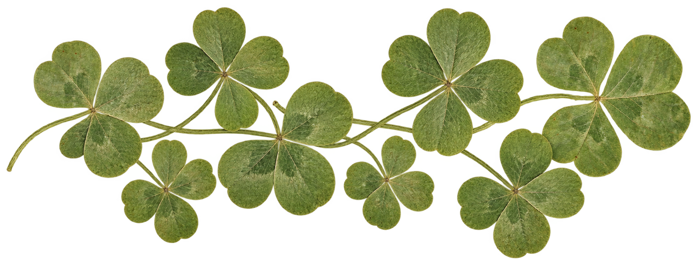

Since its introduction in 1968, Alhambra has become one of the most recognizable forms associated with Van Cleef & Arpels. Four rounded leaves and a delicate beaded border give the motif its identity.
Materials, colors, scale, and arrangements may change, but the shape remains familiar. This study looks at Alhambra as a visual system built through repetition and variation.
How can one simple shape keep changing without losing its identity?
Precious Lucky Charm
Luck has long been part of Van Cleef & Arpels’ creative language, inspiring wooden talismans, charms, and ladybugs. Jacques Arpels enjoyed picking four-leaf clovers and offering them with the poem “Don’t Quit,” a reminder to keep hope alive.
The virtuosity of the craftsmen
From stone selection and jewelry work to setting and polishing, the Maison’s savoir-faire brings Alhambra creations to life. More than a century of expertise informs the attention given to every detail. Fluid and refined, the motifs accompany the wearer’s movements with elegance.
A thousand faces
Inspired by the beauty of nature, Alhambra explores a wide range of materials: mother-of-pearl, carnelian, creased gold, and diamonds. Each surface brings a different color, texture, and play of light to the same familiar outline.
As you wish…
Edged with gold beads, Alhambra motifs appear across necklaces, pendants, bracelets, earrings, and rings. Colors, materials, and arrangements can be combined into a personal collection, carrying stories and memories through time.

About this project
Little Book of Alhambra is an independent editorial study of the Alhambra motif introduced by Van Cleef & Arpels in 1968. Rather than presenting a catalogue of jewelry, it asks how one four-leaf form became a recognizable visual system.
The project follows the motif through its origins, silhouette, materials, repetition, and craftsmanship. Adapted from a printed publication, this website uses photography and subtle interaction to reveal how consistency and variation can exist within the same design language.